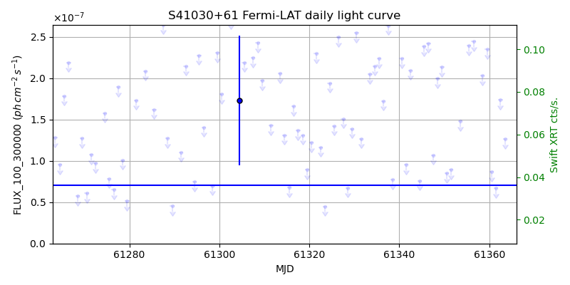
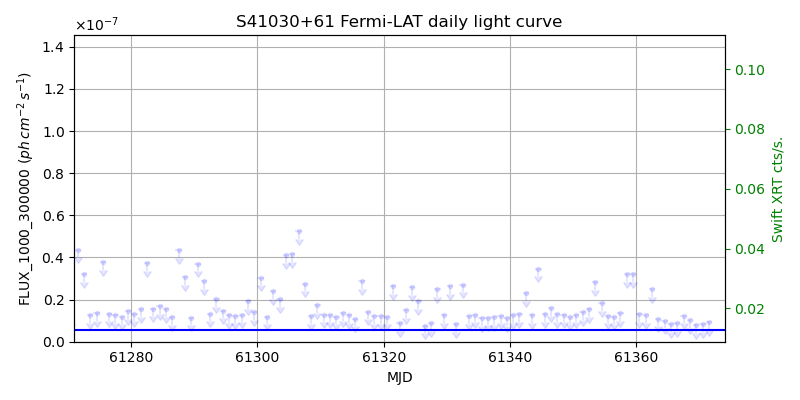

LAT Lightcurve site: https://fermi.gsfc.nasa.gov/ssc/data/access/lat/msl_lc/source/S4_1030p61
Swift site: https://www.swift.psu.edu/monitoring/source.php?source=S41030+61
NED: Query
Time of last update of this page: UT: 2026-11-20 16:22 (MJD: 61364.682)
| Property | Value |
|---|---|
| R.A. | 10:33:51.36 |
| Dec. | 60:51:07.2 |
| z | 1.408 |
| 3FGL SpectrumType | LogParabola |
| 3FGL PL Index | |
| 3FGL Flux_100_300000 | 7.06e-08 1 / (s cm2) |
| 3FGL Flux_1000_300000 | 5.62e-09 1 / (s cm2) |
| 3FGL Flux >200 GeV | 2.76e-12 1 / (s cm2) |
| 3FGL Extrap. Crab >200 GeV | 0.01 |
| 3FGL Flux After EBL Absorption >200GeV | 8.77e-15 1 / (s cm2) |
| 3FGL EBL Crab Fraction >200GeV | 0.00 |

| MJD | dMJD | Flux | dFlux | Frac3FGL | FracCrab>200GeV | EBLFracCrab>200GeV |
|---|---|---|---|---|---|---|
| 61359.50 | 0.50 | 2.35e-07 | 0.00e+00 | 0.00 | 0.00 | 0.00 |
| 61360.50 | 0.50 | 8.68e-08 | 0.00e+00 | 0.00 | 0.00 | 0.00 |
| 61361.50 | 0.50 | 6.68e-08 | 0.00e+00 | 0.00 | 0.00 | 0.00 |
| 61362.50 | 0.50 | 1.74e-07 | 0.00e+00 | 0.00 | 0.00 | 0.00 |
| 61363.50 | 0.50 | 1.27e-07 | 0.00e+00 | 0.00 | 0.00 | 0.00 |
| MJD | dMJD | Flux | dFlux | Frac3FGL | FracCrab>200GeV | EBLFracCrab>200GeV |
|---|---|---|---|---|---|---|
| 61328.50 | 3.50 | 5.90e-08 | 2.10e-08 | 0.84 | 0.01 | 0.00 |
| 61335.50 | 3.50 | 1.09e-07 | 0.00e+00 | 0.00 | 0.00 | 0.00 |
| 61342.50 | 3.50 | 9.93e-08 | 0.00e+00 | 0.00 | 0.00 | 0.00 |
| 61349.50 | 3.50 | 7.36e-08 | 0.00e+00 | 0.00 | 0.00 | 0.00 |
| 61356.50 | 3.50 | 1.48e-07 | 0.00e+00 | 0.00 | 0.00 | 0.00 |

| MJD | dMJD | Flux | dFlux | Frac3FGL | FracCrab>200GeV | EBLFracCrab>200GeV |
|---|---|---|---|---|---|---|
| 61359.50 | 0.50 | 3.20e-08 | 0.00e+00 | 0.00 | 0.00 | 0.00 |
| 61360.50 | 0.50 | 1.31e-08 | 0.00e+00 | 0.00 | 0.00 | 0.00 |
| 61361.50 | 0.50 | 1.26e-08 | 0.00e+00 | 0.00 | 0.00 | 0.00 |
| 61362.50 | 0.50 | 2.49e-08 | 0.00e+00 | 0.00 | 0.00 | 0.00 |
| 61363.50 | 0.50 | 1.10e-08 | 0.00e+00 | 0.00 | 0.00 | 0.00 |

| MJD | dMJD | Flux | dFlux | Frac3FGL | FracCrab>200GeV | EBLFracCrab>200GeV |
|---|---|---|---|---|---|---|
| 61328.50 | 3.50 | 6.14e-09 | 0.00e+00 | 0.00 | 0.00 | 0.00 |
| 61335.50 | 3.50 | 2.30e-09 | 0.00e+00 | 0.00 | 0.00 | 0.00 |
| 61342.50 | 3.50 | 4.82e-09 | 0.00e+00 | 0.00 | 0.00 | 0.00 |
| 61349.50 | 3.50 | 2.11e-09 | 0.00e+00 | 0.00 | 0.00 | 0.00 |
| 61356.50 | 3.50 | 7.33e-09 | 0.00e+00 | 0.00 | 0.00 | 0.00 |
--------------------------------------------------------- Using user-supplied coords: 10:33:51.36 60:51:07.2 2000 --------------------------------------------------------- FLWO UT night of: 2026-11-21 Local Sid. @ Midnight: 03:37 Sunset (-15.0) (local, UT): 18:33 01:33 Sunrise (-15.0) (local, UT): 05:47 12:47 Moonrise (local, UT): Moonset (local, UT): 03:40 10:40 Moon phase: 0.85 --------------------------------------------------------- AzTime LSID UT Obj_el Obj_az Mn_el Mn_az Sep. --------------------------------------------------------- 18:33 22:09 01:33 2.8 356.8 47.9 117.4 108.0 19:03 22:39 02:03 2.6 0.4 53.3 125.0 107.8 19:33 23:09 02:33 2.9 4.1 58.2 134.7 107.6 20:03 23:39 03:03 3.5 7.7 62.3 146.9 107.5 20:33 00:09 03:33 4.5 11.3 65.1 162.1 107.3 21:03 00:39 04:03 5.9 14.7 66.3 179.7 107.1 21:33 01:09 04:33 7.7 17.9 65.4 197.5 107.0 22:03 01:39 05:03 9.8 20.9 62.9 213.2 106.8 22:33 02:09 05:33 12.2 23.7 59.0 225.9 106.7 23:03 02:39 06:03 14.9 26.3 54.2 235.9 106.5 23:33 03:09 06:33 17.9 28.6 48.9 243.9 106.3 00:03 03:39 07:03 21.0 30.6 43.2 250.4 106.2 00:33 04:10 07:33 24.3 32.2 37.3 255.9 106.0 01:03 04:40 08:03 27.8 33.6 31.2 260.7 105.8 01:33 05:10 08:33 31.4 34.5 25.1 265.1 105.7 02:03 05:40 09:03 35.0 35.0 19.0 269.2 105.5 02:33 06:10 09:33 38.7 35.0 12.9 273.0 105.3 03:03 06:40 10:03 42.4 34.5 6.8 276.9 105.2 03:33 07:10 10:33 45.9 33.3 1.0 280.7 105.0 04:03 07:40 11:03 49.4 31.3 -4.9 284.7 104.8 04:33 08:10 11:33 52.6 28.4 -11.1 288.8 104.6 05:03 08:40 12:03 55.4 24.5 -16.8 293.2 104.4 05:33 09:10 12:33 57.8 19.4 -22.3 298.1 104.2 05:47 09:25 12:47 58.8 16.6 -24.8 300.5 104.1 --------------------------------------------------------- Dark hours >55 deg.: 0.82 srcstart (UT): 2026-11-21 11:57 srcend (UT): 2026-11-21 12:46